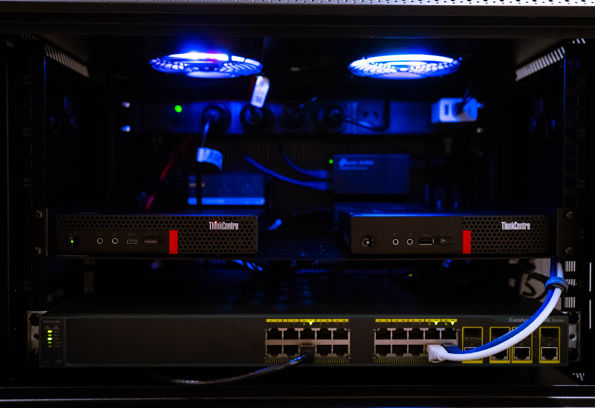
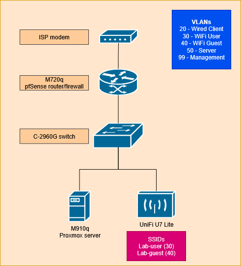
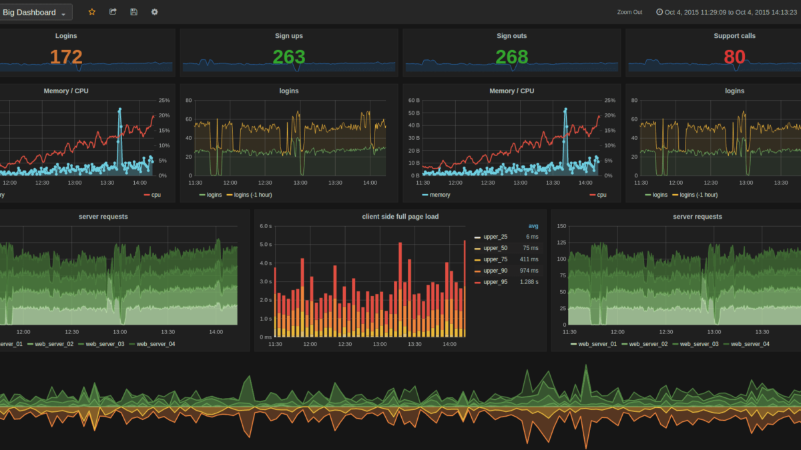

Homelab Core Infrastructure
Version 1.0 | Oct 2025
← Back to ProjectsThis page documents the full Homelab Core setup, goals, topology, and lessons learned from building an enterprise-style lab using pfSense, Cisco, UniFi, and Proxmox.

The network features a pfSense mini PC router/firewall, which goes downstream to a Cisco switch for layer 2 connections, and wireless connectivity is handled by the UniFi access point. The switch and router are configured with VLANs, to which the switch has trunk ports to both the router & AP.
The home modem is connected to the pfSense router via a LAN port, and isn't set to bridge since the homelab will not be turned on 24/7, ensuring that WiFi users can still connect to the home modem. Another mini PC has Proxmox installed which runs under the Server VLAN, allowing me to spin up LXC or VMs to run services within my network.

# Trunk link example
int g0/0
switchport mode trunk
switchport trunk allowed vlan 10, 20, 30, 40, 50, 99
# Firewall rule example
pass in quick on igb0.10 proto tcp from 10.80.10.0/24 to any port = 443 keep state- UniFi Controller (LXC) — Wireless management.
- AdGuard Home (LXC) — DNS filtering.
- Seafile (VM) — File storage and sync.
These are my current services on my Proxmox host, I intend to expand in the future once I upgrade the hardware as the current bottleneck is RAM and Storage. I decided to run Seafile on a VM as opposed to a LXC as VMs offer a more 'gapped' state from the host rather than a LXC, and I would want that kind of security especially with cloud file sharing such as Seafile.
Future expansion includes centralized log management using Wazuh, metrics visualization with Grafana, and flow analytics via ntopng.

- Proper VLAN tagging prevents isolation issues.
- pfSense rule order directly affects connectivity.
- LXC containers reduce resource overhead vs. VMs.